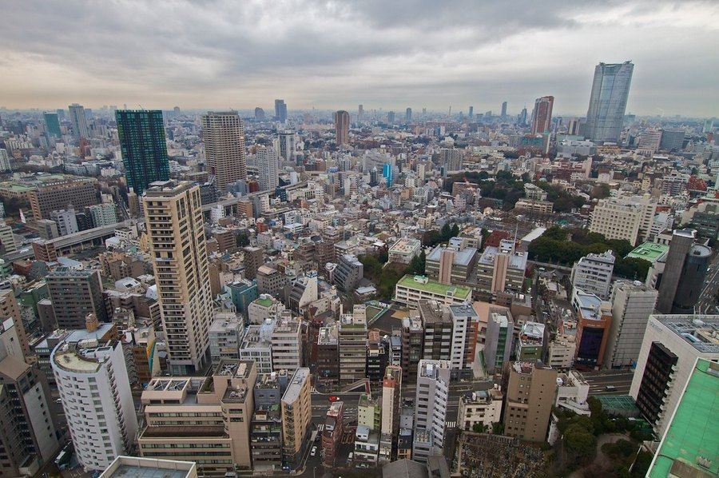

Air Quality and Brain Fog: The Pollution Connection
Fine particle pollution doesn't stay in your lungs. Research increasingly shows it crosses into the brain, where it triggers inflammation and impairs the systems that support memory and focus.

Key takeaways
- PM2.5 crosses the blood-brain barrier and triggers neuroinflammation, which directly impairs cognition.
- Acute exposure to high-pollution air can produce same-day brain fog, slower processing, and memory slips.
- Long-term exposure is associated with accelerated cognitive decline and higher dementia risk in large cohort studies.
- Indoor air can be worse than outdoor during pollution events. HEPA purifiers make a measurable difference.
- Wildfire smoke is an increasingly common source of high PM2.5 exposure, even far from the fire itself.
Most people think about air quality in terms of lung health. That framing is too narrow. The brain accounts for roughly 20% of the body's oxygen consumption, and everything your lungs take in eventually circulates through it. When air quality drops, the brain feels it. Researchers have documented acute cognitive effects on high-pollution days, and a growing body of epidemiological work now links chronic exposure to fine particulate matter with accelerated cognitive decline and an elevated risk of dementia. This is an emerging area of research, and the evidence is not yet at the level of establishing clean causation. But the signal is consistent enough across populations and study designs that it's worth understanding and taking seriously.
What is PM2.5, and how does it reach the brain?
PM2.5 refers to particulate matter smaller than 2.5 micrometers in diameter. That's about 30 times smaller than a human hair. Particles this small can bypass the mucociliary defenses of the nose and upper airway and deposit directly in the alveoli, the gas-exchange surfaces deep in the lungs. From there, they enter the bloodstream. The blood-brain barrier, which filters out many pathogens and toxins, is not impermeable to ultra-fine particles. Animal studies and emerging human autopsy data show that PM2.5 particles can accumulate in brain tissue. Some researchers also believe particles can travel directly from the nasal passages along the olfactory nerve into the brain, bypassing the blood entirely.
Once in neural tissue, these particles appear to activate microglia, the brain's immune cells. Chronic microglial activation causes neuroinflammation, and sustained neuroinflammation is one of the mechanisms researchers associate with Alzheimer's disease and other neurodegenerative conditions. This is a plausible biological pathway connecting air pollution to cognitive decline, and it aligns with what population studies are observing.
Does poor air quality cause same-day brain fog?
Yes, and the evidence here is fairly direct. Several studies have examined cognitive performance in real time during pollution events. A 2019 study published in Nature Human Behaviour analyzed chess moves made during high-PM2.5 days versus low-pollution days and found that players made significantly more errors when outdoor pollution was elevated, even controlling for fatigue, stress, and time controls. Another study tracking financial traders found that air quality on any given day predicted decision-making quality.
The acute mechanism is thought to involve reduced cerebral blood flow and oxidative stress in neuronal tissue rather than particle accumulation, which takes time. Poor air also disrupts sleep quality, and since deep sleep is central to memory consolidation, even a single night of breathing polluted indoor air can impair next-day recall. If you've ever woken up on a smoky morning feeling cognitively sluggish, this is probably why.
What does long-term exposure do to memory?
The long-term picture is where the research gets more serious. A 2020 analysis of the Women's Health Initiative Memory Study, which followed older women for up to 10 years, found that those living in areas with higher PM2.5 exposure had significantly elevated rates of probable dementia. Several other cohort studies across the US, UK, Europe, and Asia have found similar associations between residential air pollution levels and cognitive decline rates. The Lancet Commission on dementia prevention, intervention, and care added air pollution to its list of modifiable risk factors in 2020, the same year it identified 40% of dementia cases as potentially linked to modifiable factors.
To be precise about what these studies show: they establish an association, not proof of causation. People who live in high-pollution areas often also face other stressors (noise, socioeconomic disadvantage, less green space) that independently affect brain health. Researchers attempt to control for these, but residual confounding is hard to rule out. The consistency of the signal across studies using different populations and methods is reassuring, but the science is still developing. Treat long-term pollution exposure as a risk factor to take seriously, not as a guaranteed cause of dementia.
COMPLEX
The memory formula we rate highest in 2026
When environmental stressors like pollution are unavoidable, nutritional support for the brain matters more. Advanced Memory Complex includes antioxidant-supporting ingredients alongside citicoline, bacopa, and phosphatidylserine.
See Today's Price →Wildfire smoke: a growing concern
Wildfire smoke deserves special mention. It's not just PM2.5. Wildfire smoke contains a complex mixture of carbon monoxide, volatile organic compounds, heavy metals, and polycyclic aromatic hydrocarbons, many of which are independently neurotoxic. Wildfire events now affect large portions of North America, Australia, and Europe during summer months, and the geographic reach extends far beyond the fire zone. People living hundreds of miles from an active fire can experience several days of AQI readings in the "unhealthy" or worse range. Limiting outdoor activity and using indoor air filtration during these events is the most practical protective measure available.
Indoor air quality often matters more than outdoor
Americans spend roughly 90% of their time indoors, according to EPA estimates. Indoor air quality gets less attention than outdoor, but it can be worse on pollution days if windows are open, and it carries its own independent hazards: cooking smoke, off-gassing from building materials, mold, and volatile compounds from cleaning products. During wildfire events, indoor PM2.5 can quickly approach outdoor levels without adequate filtration. A HEPA air purifier, particularly in the bedroom where you spend seven to nine hours per night, is probably the highest-impact single purchase you can make for indoor air quality. Look for units rated for the square footage of the room. HEPA filters trap particles down to 0.3 micrometers, which captures PM2.5 effectively.
Beyond filtration, several practical steps reduce daily exposure. Monitor your local Air Quality Index (AQI) using the EPA's AirNow app or a similar service. Avoid exercising outdoors on high-pollution days. Keep windows closed during smoke events and use recirculated air in your car rather than fresh. These aren't total protections, but they reduce exposure in a cumulative way that likely matters over years and decades.
What about indoor plants and air quality?
The idea that houseplants meaningfully clean indoor air gained wide traction after a 1989 NASA study. Subsequent research suggests the effect is real but modest at the scale of plants most people keep in their homes. You'd need many dozens of plants per room to produce air filtration equivalent to a good HEPA unit. Plants are worth having for other reasons (psychological wellbeing, humidity regulation), but they're not a substitute for mechanical filtration during a smoke event or high-pollution period.
Brain fog vs. air-quality fog: how to tell
Brain fog has many potential causes, including sleep debt, dehydration, stress, thyroid issues, and nutritional deficiencies. If your brain fog correlates with days when outdoor air quality is poor (check the AQI), or worsens during wildfire season, pollution is worth considering as a contributing factor. It's rarely the only cause, though. For a broader look at what drives brain fog and how to address each cause, see our full guide to brain fog causes and fixes and our related article on dehydration and brain fog. If symptoms are severe or persistent, talk to a physician. Air pollution effects generally improve relatively quickly once exposure drops, so if your brain fog persists despite good air quality, look for other contributing factors.
The broader picture for memory health
Air quality is one of more than a dozen modifiable factors that affect long-term cognitive health. It's worth managing, but it sits alongside sleep, exercise, diet, stress, and social connection as levers you can actually pull. For the full evidence-based overview of what protects memory over time, start with our guide to how to improve your memory. And if you want to look at targeted nutritional support for brain health, see our roundup of the best memory supplements of 2026. Always discuss any new supplement with your doctor before starting.
Frequently asked questions
Can air pollution cause brain fog?
Yes. Research links exposure to fine particulate matter (PM2.5) and other air pollutants to acute cognitive impairment, including difficulty concentrating, slower reaction times, and memory slips. The mechanisms include neuroinflammation, reduced cerebral blood flow, and oxidative stress in brain tissue.
Does air quality affect memory long-term?
Long-term exposure to elevated PM2.5 has been associated with accelerated cognitive decline and a higher risk of dementia in multiple large cohort studies. The evidence isn't conclusive enough to definitively say pollution causes dementia, but the association is consistent across populations and methodologies.
What air pollutants are worst for the brain?
PM2.5 (fine particulate matter smaller than 2.5 micrometers) is the most studied and appears most harmful. NO2 from vehicle exhaust and ozone also show associations with cognitive decline. Wildfire smoke is a particular concern because it combines high PM2.5 with other toxic compounds.
How can I protect my brain from air pollution?
Monitor your local AQI and limit strenuous outdoor activity on high-pollution days. Use HEPA air purifiers indoors, especially in bedrooms. Keep windows closed during smoke events. These practical steps reduce daily exposure and may matter for long-term brain health.
Want more ways to protect your brain?
Managing air quality is one piece of the puzzle. See the memory formulas our editors rate highest for nutritional brain support in 2026.
See the Top 5 Memory Formulas →Related: Brain fog causes and fixes · Dehydration and brain fog · Dementia prevention tips · Best memory formulas of 2026